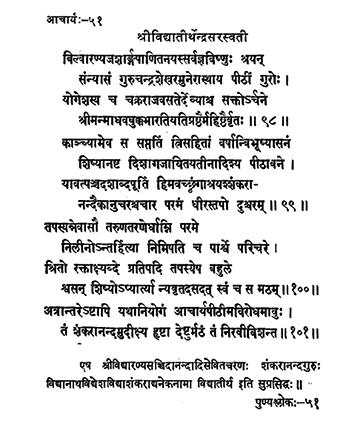

51 आचार्य - 51 - श्रीविद्यातीर्थेन्द्रः
बिल्वारण्य ••• महिष्ठैर्वृतः ॥ ९८ ॥
काञ्च्यामेव ••• दुश्चरम् ॥ ९९ ॥
तपस्यन्नेवासौ ••• स मठम् ॥ १०० ॥
अत्रान्तरेऽष्टापि ••• निरवीविशन्त ॥ १०१ ॥
एष ••• सुप्रसिद्धः ॥
Sarvajñaviṣṇu (name of Śrī Vidyātīrtha before initiation), son of Śārṅgapāṇi) f Bilvaranya received initiation into asceticism from the sage preceptor Candraśekhara; remaining in the seat of the master, engrossed in/attached to the worship of Lord Yogeśa and the goddess who dwells in the Cakrarāja, he was surrounded by the eminent saints - Śrī Mādhava, Bukka and Bhārati tīrtha.
He decorated the seat by remaining in Kāṅci only for seventy-three years and after directing eight disciples who shone like the presiding deities of eight quarters to take care of the Pīṭha, he, the steadfast one, resorting to the peaks of Himalayas with the only companion disciple, Śaṅkarānanda, observed severe penance for fifteen years.
This preceptor, in the course of penance itself, as the attending disciple was looking at, merged in the Supreme Effulgence of the Sun on the pratipad (first day) of the bright fortnight of the Māgha month in the year raktākṣī. The disciple too afflicted with grief heavily returned to his Maṭha.
In the meantime, the eight disciples too protected the Pīṭha as per the directions; gladdened on seeing the disciple Śaṅkarānanda, they entered into that Maṭha of their preceptor.
This preceptor, adored by Śrī Vidyāraṇya, Saccidānanda and others is also known popularly as Vidyānātha, Vidyeśa, Vidyāśaṅkara, Vidyātīrtha and Śaṅkarānandaguru.
